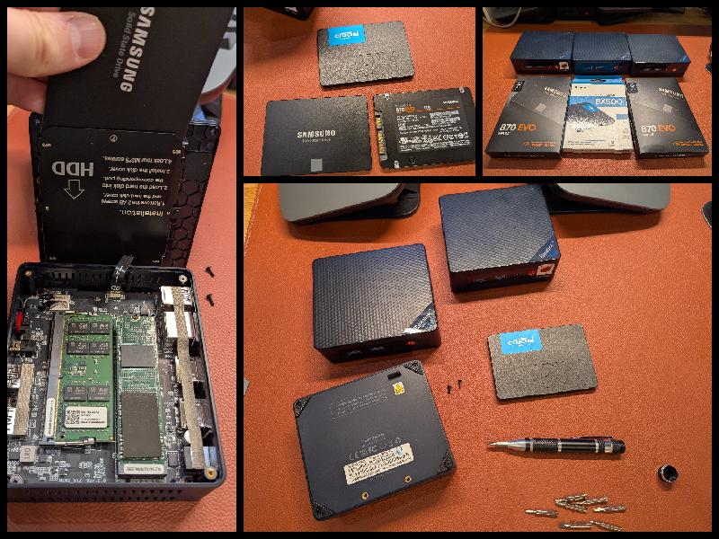
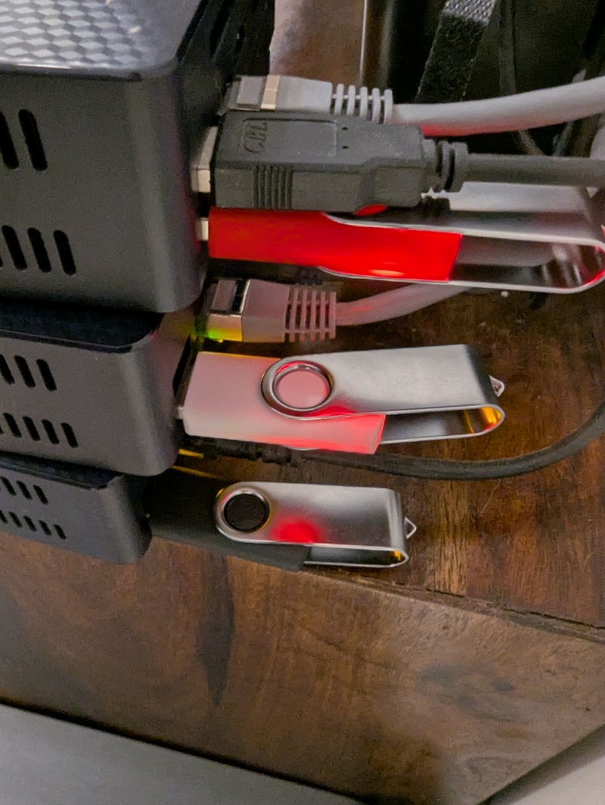
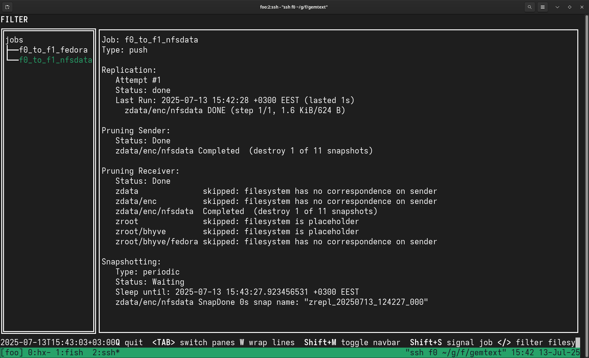

f3s: Kubernetes with FreeBSD - Part 6: Storage
Published at 2025-07-13T16:44:29+03:00, last updated Sun 10 May 2026
This is the sixth blog post about the f3s series for self-hosting demands in a home lab. f3s? The "f" stands for FreeBSD, and the "3s" stands for k3s, the Kubernetes distribution used on FreeBSD-based physical machines.
2024-11-17 f3s: Kubernetes with FreeBSD - Part 1: Setting the stage
2024-12-03 f3s: Kubernetes with FreeBSD - Part 2: Hardware and base installation
2025-02-01 f3s: Kubernetes with FreeBSD - Part 3: Protecting from power cuts
2025-04-05 f3s: Kubernetes with FreeBSD - Part 4: Rocky Linux Bhyve VMs
2025-05-11 f3s: Kubernetes with FreeBSD - Part 5: WireGuard mesh network
2025-07-14 f3s: Kubernetes with FreeBSD - Part 6: Storage (You are currently reading this)
2025-10-02 f3s: Kubernetes with FreeBSD - Part 7: k3s and first pod deployments
2025-12-07 f3s: Kubernetes with FreeBSD - Part 8: Observability
2025-12-14 f3s: Kubernetes with FreeBSD - Part 8b: Distributed Tracing with Tempo
2026-04-02 f3s: Kubernetes with FreeBSD - Part 9: GitOps with ArgoCD
2026-09-01 f3s: Kubernetes with FreeBSD - Part 10: A New Home

Table of Contents
- f3s: Kubernetes with FreeBSD - Part 6: Storage
- ⇢ Introduction
- ⇢ Additional storage capacity
- ⇢ ZFS encryption keys
- ⇢ ⇢ UFS on USB keys
- ⇢ ⇢ Generating encryption keys
- ⇢ ⇢ Configuring zdata ZFS pool encryption
- ⇢ ⇢ Migrating Bhyve VMs to an encrypted bhyve ZFS volume
- ⇢ ZFS Replication with zrepl
- ⇢ ⇢ Replication requirements
- ⇢ ⇢ Installing zrepl
- ⇢ ⇢ Configuring zrepl on f1 (sink)
- ⇢ ⇢ Enabling and starting zrepl services
- ⇢ ⇢ Monitoring replication
- ⇢ ⇢ Verifying replication after reboot
- ⇢ ⇢ Failover limitations
- ⇢ ⇢ Mounting the NFS datasets
- ⇢ Troubleshooting: Files not appearing in replication
- ⇢ ⇢ Configuring automatic key loading on boot
- ⇢ ⇢ Troubleshooting: zrepl Replication Not Working
- ⇢ ⇢ Check if zrepl Services are Running
- ⇢ ⇢ Check zrepl Status for Errors
- ⇢ ⇢ Fixing "No Common Snapshot" Errors
- ⇢ ⇢ Network Connectivity Issues
- ⇢ ⇢ Encryption Key Issues
- ⇢ ⇢ Monitoring Ongoing Replication
- ⇢ CARP (Common Address Redundancy Protocol)
- ⇢ ⇢ How CARP Works
- ⇢ ⇢ Configuring CARP
- ⇢ ⇢ CARP State Change Notifications
- ⇢ NFS Server Configuration
- ⇢ ⇢ Setting up NFS on f0 (Primary)
- ⇢ ⇢ Configuring Stunnel for NFS Encryption with CARP Failover
- ⇢ ⇢ Creating a Certificate Authority for Client Authentication
- ⇢ ⇢ Install and Configure Stunnel on f0
- ⇢ ⇢ Setting up NFS on f1 (Standby)
- ⇢ ⇢ CARP Control Script for Clean Failover
- ⇢ ⇢ CARP Management Script
- ⇢ ⇢ Automatic Failback After Reboot
- ⇢ Client Configuration for NFS via Stunnel
- ⇢ ⇢ Configuring Rocky Linux Clients (r0, r1, r2)
- ⇢ ⇢ NFSv4 user mapping config on Rocky
- ⇢ ⇢ Testing NFS Mount with Stunnel
- ⇢ ⇢ Testing CARP Failover with mounted clients and stale file handles:
- ⇢ ⇢ Complete Failover Test
- ⇢ Update: Upgrade to 4TB drives
- ⇢ ⇢ Upgrading f1 (simpler approach)
- ⇢ ⇢ Upgrading f0 (using ZFS resilvering)
- ⇢ Conclusion
- ⇢ Future Storage Explorations
- ⇢ ⇢ MinIO for S3-Compatible Object Storage
- ⇢ ⇢ MooseFS for Distributed High Availability
Introduction
In the previous posts, we set up a WireGuard mesh network. In the future, we will also set up a Kubernetes cluster. Kubernetes workloads often require persistent storage for databases, configuration files, and application data. Local storage on each node has significant limitations:
- No data sharing: Pods (once we run Kubernetes) on different nodes can't access the same data
- Pod mobility: If a pod moves to another node, it loses access to its data
- No redundancy: Hardware failure means data loss
In this post, I set up the storage using:
- CARP: For high availability with automatic IP failover
- NFS over stunnel: For secure, encrypted network storage
- ZFS: For data integrity, encryption, and efficient snapshots
- zrepl: For continuous ZFS replication between nodes
The result: encrypted, replicated storage that all pods can share and that survives a node failure.
Other than what was mentioned in the first post of this blog series, we aren't using HAST, but zrepl for data replication. Read more about it later in this blog post.
Additional storage capacity
We add 1 TB of additional storage to each of the nodes (f0, f1, f2) in the form of an SSD drive. The Beelink mini PCs have enough space in the chassis for the extra space.


Upgrading the storage was as easy as unscrewing, plugging the drive in, and then screwing it back together again. The procedure was uneventful! We're using two different SSD models (Samsung 870 EVO and Crucial BX500) to avoid simultaneous failures from the same manufacturing batch.
We then create the zdata ZFS pool on all three nodes:
paul@f0:~ % doas zpool create -m /data zdata /dev/ada1 paul@f0:~ % zpool list NAME SIZE ALLOC FREE CKPOINT EXPANDSZ FRAG CAP DEDUP HEALTH ALTROOT zdata 928G 12.1M 928G - - 0% 0% 1.00x ONLINE - zroot 472G 29.0G 443G - - 0% 6% 1.00x ONLINE - paul@f0:/ % doas camcontrol devlist <512GB SSD D910R170> at scbus0 target 0 lun 0 (pass0,ada0) <Samsung SSD 870 EVO 1TB SVT03B6Q> at scbus1 target 0 lun 0 (pass1,ada1) paul@f0:/ %
To verify that we have a different SSD on the second node (the third node has the same drive as the first):
paul@f1:/ % doas camcontrol devlist <512GB SSD D910R170> at scbus0 target 0 lun 0 (pass0,ada0) <CT1000BX500SSD1 M6CR072> at scbus1 target 0 lun 0 (pass1,ada1)
ZFS encryption keys
ZFS native encryption requires encryption keys to unlock datasets. The keys have to live somewhere safe, but they also have to be there at boot:
- Security: Keys must not be stored on the same disks they encrypt
- Availability: Keys must be available at boot for automatic mounting
- Portability: Keys should be easily moved between systems for recovery
I put the keys on USB sticks. Without the stick, the disks are unreadable, which covers disk theft and sloppy disposal. A real production setup would use a proper key management system, but for a home lab, USB sticks are good enough and simple.
UFS on USB keys
We'll format the USB drives with UFS (Unix File System) rather than ZFS for simplicity. There is no need to use ZFS.
Let's see the USB keys:

To verify that the USB key (flash disk) is there:
paul@f0:/ % doas camcontrol devlist <512GB SSD D910R170> at scbus0 target 0 lun 0 (pass0,ada0) <Samsung SSD 870 EVO 1TB SVT03B6Q> at scbus1 target 0 lun 0 (pass1,ada1) <Generic Flash Disk 8.07> at scbus2 target 0 lun 0 (da0,pass2) paul@f0:/ %
Let's create the UFS file system and mount it (done on all three nodes f0, f1 and f2):
paul@f0:/ % doas newfs /dev/da0 /dev/da0: 15000.0MB (30720000 sectors) block size 32768, fragment size 4096 using 24 cylinder groups of 625.22MB, 20007 blks, 80128 inodes. with soft updates super-block backups (for fsck_ffs -b #) at: 192, 1280640, 2561088, 3841536, 5121984, 6402432, 7682880, 8963328, 10243776, 11524224, 12804672, 14085120, 15365568, 16646016, 17926464, 19206912,k 20487360, ... paul@f0:/ % echo '/dev/da0 /keys ufs rw 0 2' | doas tee -a /etc/fstab /dev/da0 /keys ufs rw 0 2 paul@f0:/ % doas mkdir /keys paul@f0:/ % doas mount /keys paul@f0:/ % df | grep keys /dev/da0 14877596 8 13687384 0% /keys


Generating encryption keys
The following keys will later be used to encrypt the ZFS file systems. They will be stored on all three nodes, serving as a backup in case one of the keys is lost or corrupted. When we later replicate encrypted ZFS volumes from one node to another, the keys must also be available on the destination node.
paul@f0:/keys % doas openssl rand -out /keys/f0.lan.buetow.org:bhyve.key 32 paul@f0:/keys % doas openssl rand -out /keys/f1.lan.buetow.org:bhyve.key 32 paul@f0:/keys % doas openssl rand -out /keys/f2.lan.buetow.org:bhyve.key 32 paul@f0:/keys % doas openssl rand -out /keys/f0.lan.buetow.org:zdata.key 32 paul@f0:/keys % doas openssl rand -out /keys/f1.lan.buetow.org:zdata.key 32 paul@f0:/keys % doas openssl rand -out /keys/f2.lan.buetow.org:zdata.key 32 paul@f0:/keys % doas chown root * paul@f0:/keys % doas chmod 400 * paul@f0:/keys % ls -l total 20 *r-------- 1 root wheel 32 May 25 13:07 f0.lan.buetow.org:bhyve.key *r-------- 1 root wheel 32 May 25 13:07 f1.lan.buetow.org:bhyve.key *r-------- 1 root wheel 32 May 25 13:07 f2.lan.buetow.org:bhyve.key *r-------- 1 root wheel 32 May 25 13:07 f0.lan.buetow.org:zdata.key *r-------- 1 root wheel 32 May 25 13:07 f1.lan.buetow.org:zdata.key *r-------- 1 root wheel 32 May 25 13:07 f2.lan.buetow.org:zdata.key
After creation, these are copied to the other two nodes, f1 and f2, into the /keys partition (I won't provide the commands here; create a tarball, copy it over, and extract it on the destination nodes).
Configuring zdata ZFS pool encryption
Let's encrypt our zdata ZFS pool. We are not encrypting the whole pool, but everything within the zdata/enc data set:
paul@f0:/keys % doas zfs create -o encryption=on -o keyformat=raw -o \ keylocation=file:///keys/`hostname`:zdata.key zdata/enc paul@f0:/ % zfs list | grep zdata zdata 836K 899G 96K /data zdata/enc 200K 899G 200K /data/enc paul@f0:/keys % zfs get all zdata/enc | grep -E -i '(encryption|key)' zdata/enc encryption aes-256-gcm - zdata/enc keylocation file:///keys/f0.lan.buetow.org:zdata.key local zdata/enc keyformat raw - zdata/enc encryptionroot zdata/enc - zdata/enc keystatus available -
All future data sets within zdata/enc will inherit the same encryption key.
Migrating Bhyve VMs to an encrypted bhyve ZFS volume
We set up Bhyve VMs in a previous blog post. Their ZFS data sets rely on zroot, which is the default ZFS pool on the internal 512GB NVME drive. They aren't encrypted yet, so we encrypt the VM data sets as well now. To do so, we first shut down the VMs on all three nodes:
paul@f0:/keys % doas vm stop rocky Sending ACPI shutdown to rocky paul@f0:/keys % doas vm list NAME DATASTORE LOADER CPU MEMORY VNC AUTO STATE rocky default uefi 4 14G - Yes [1] Stopped
After this, we rename the unencrypted data set to _old, create a new encrypted data set, and also snapshot it as @hamburger.
paul@f0:/keys % doas zfs rename zroot/bhyve zroot/bhyve_old paul@f0:/keys % doas zfs set mountpoint=/mnt zroot/bhyve_old paul@f0:/keys % doas zfs snapshot zroot/bhyve_old/rocky@hamburger paul@f0:/keys % doas zfs create -o encryption=on -o keyformat=raw -o \ keylocation=file:///keys/`hostname`:bhyve.key zroot/bhyve paul@f0:/keys % doas zfs set mountpoint=/zroot/bhyve zroot/bhyve paul@f0:/keys % doas zfs set mountpoint=/zroot/bhyve/rocky zroot/bhyve/rocky
Once done, we import the snapshot into the encrypted dataset and also copy some other metadata files from vm-bhyve back over.
paul@f0:/keys % doas zfs send zroot/bhyve_old/rocky@hamburger | \ doas zfs recv zroot/bhyve/rocky paul@f0:/keys % doas cp -Rp /mnt/.config /zroot/bhyve/ paul@f0:/keys % doas cp -Rp /mnt/.img /zroot/bhyve/ paul@f0:/keys % doas cp -Rp /mnt/.templates /zroot/bhyve/ paul@f0:/keys % doas cp -Rp /mnt/.iso /zroot/bhyve/
We also have to make encrypted ZFS data sets mount automatically on boot:
paul@f0:/keys % doas sysrc zfskeys_enable=YES zfskeys_enable: -> YES paul@f0:/keys % doas vm init paul@f0:/keys % doas reboot . . . paul@f0:~ % doas vm list paul@f0:~ % doas vm list NAME DATASTORE LOADER CPU MEMORY VNC AUTO STATE rocky default uefi 4 14G 0.0.0.0:5900 Yes [1] Running (2265)
As you can see, the VM is running. This means the encrypted zroot/bhyve was mounted successfully after the reboot! Now we can destroy the old, unencrypted, and now unused bhyve dataset:
paul@f0:~ % doas zfs destroy -R zroot/bhyve_old
To verify once again that zroot/bhyve and zroot/bhyve/rocky are now both encrypted, we run:
paul@f0:~ % zfs get all zroot/bhyve | grep -E '(encryption|key)' zroot/bhyve encryption aes-256-gcm - zroot/bhyve keylocation file:///keys/f0.lan.buetow.org:bhyve.key local zroot/bhyve keyformat raw - zroot/bhyve encryptionroot zroot/bhyve - zroot/bhyve keystatus available - paul@f0:~ % zfs get all zroot/bhyve/rocky | grep -E '(encryption|key)' zroot/bhyve/rocky encryption aes-256-gcm - zroot/bhyve/rocky keylocation none default zroot/bhyve/rocky keyformat raw - zroot/bhyve/rocky encryptionroot zroot/bhyve - zroot/bhyve/rocky keystatus available -
ZFS Replication with zrepl
CARP (see later in this post) only moves the IP address. The backup node also needs current data, so we need continuous replication. Without it, a failover means data loss, or we'd need shared storage like iSCSI, which is a single point of failure.
Replication requirements
Our storage system has different replication needs:
- NFS data (/data/nfs/k3svolumes): Soon, it will contain active Kubernetes persistent volumes. Needs frequent replication (every minute) to minimise data loss during failover.
- VM data (/zroot/bhyve/freebsd): Contains VM images that change less frequently. Can tolerate longer replication intervals (every 10 minutes).
The 1-minute replication window is perfectly acceptable for my personal use cases. It's a home lab, not a trading system. Losing at most 1 minute of work in a disaster scenario is a reasonable trade-off for the reliability and simplicity of snapshot-based replication. Additionally, in the case of a "1 minute of data loss," I would likely still have the data available on the client side.
Why use zrepl instead of HAST? While HAST (Highly Available Storage) is FreeBSD's native solution for high-availability storage and supports synchronous replication—thus eliminating the mentioned 1-minute window—I've chosen zrepl for a few reasons:
- HAST can cause ZFS corruption: HAST operates at the block level and doesn't understand ZFS's transactional semantics. During failover, in-flight transactions can lead to corrupted zpools. I've experienced this firsthand (I am confident I have configured something wrong) - the automatic failover would trigger while ZFS was still writing, resulting in an unmountable pool.
- ZFS-aware replication: zrepl understands ZFS datasets and snapshots. It replicates at the dataset level, ensuring each snapshot is a consistent point-in-time copy.
- Snapshot history: With zrepl, you get multiple recovery points (every minute for NFS data in our setup). If corruption occurs, you can roll back to any previous snapshot. HAST only gives you the current state.
- Easier recovery: When something goes wrong with zrepl, you still have intact snapshots on both sides. With HAST, a corrupted primary often means a corrupted secondary as well.
FreeBSD HAST
Installing zrepl
First, install zrepl on both hosts involved (we will replicate data from f0 to f1):
paul@f0:~ % doas pkg install -y zrepl
Then, we verify the pools and datasets on both hosts:
# On f0 paul@f0:~ % doas zpool list NAME SIZE ALLOC FREE CKPOINT EXPANDSZ FRAG CAP DEDUP HEALTH ALTROOT zdata 928G 1.03M 928G - - 0% 0% 1.00x ONLINE - zroot 472G 26.7G 445G - - 0% 5% 1.00x ONLINE - paul@f0:~ % doas zfs list -r zdata/enc NAME USED AVAIL REFER MOUNTPOINT zdata/enc 200K 899G 200K /data/enc # On f1 paul@f1:~ % doas zpool list NAME SIZE ALLOC FREE CKPOINT EXPANDSZ FRAG CAP DEDUP HEALTH ALTROOT zdata 928G 956K 928G - - 0% 0% 1.00x ONLINE - zroot 472G 11.7G 460G - - 0% 2% 1.00x ONLINE - paul@f1:~ % doas zfs list -r zdata/enc NAME USED AVAIL REFER MOUNTPOINT zdata/enc 200K 899G 200K /data/enc
Since we have a WireGuard tunnel between f0 and f1, we'll use TCP transport over the secure tunnel instead of SSH. First, check the WireGuard IP addresses:
# Check WireGuard interface IPs paul@f0:~ % ifconfig wg0 | grep inet inet 192.168.2.130 netmask 0xffffff00 paul@f1:~ % ifconfig wg0 | grep inet inet 192.168.2.131 netmask 0xffffff00
Let's create a dedicated dataset for NFS data that will be replicated:
# Create the nfsdata dataset that will hold all data exposed via NFS paul@f0:~ % doas zfs create zdata/enc/nfsdata
Afterwards, we create the zrepl configuration on f0:
paul@f0:~ % doas tee /usr/local/etc/zrepl/zrepl.yml <<'EOF' global: logging: - type: stdout level: info format: human jobs: - name: f0_to_f1_nfsdata type: push connect: type: tcp address: "192.168.2.131:8888" filesystems: "zdata/enc/nfsdata": true send: encrypted: true snapshotting: type: periodic prefix: zrepl_ interval: 1m pruning: keep_sender: - type: last_n count: 10 - type: grid grid: 4x7d | 6x30d regex: "^zrepl_.*" keep_receiver: - type: last_n count: 10 - type: grid grid: 4x7d | 6x30d regex: "^zrepl_.*" - name: f0_to_f1_freebsd type: push connect: type: tcp address: "192.168.2.131:8888" filesystems: "zroot/bhyve/freebsd": true send: encrypted: true snapshotting: type: periodic prefix: zrepl_ interval: 10m pruning: keep_sender: - type: last_n count: 10 - type: grid grid: 4x7d regex: "^zrepl_.*" keep_receiver: - type: last_n count: 10 - type: grid grid: 4x7d regex: "^zrepl_.*" EOF
We're using two separate replication jobs with different intervals:
- f0_to_f1_nfsdata: Replicates NFS data every minute for faster failover recovery
- f0_to_f1_freebsd: Replicates FreeBSD VM every ten minutes (less critical)
The FreeBSD VM is only used for development purposes, so it doesn't require as frequent replication as the NFS data. It's off-topic for this series, but it shows that zrepl can handle different datasets with different intervals.
Also:
- We're specifically replicating zdata/enc/nfsdata instead of the entire zdata/enc dataset. This dedicated dataset will contain all the data we later want to expose via NFS, keeping a clear separation between replicated NFS data and other local encrypted data.
- We use send: encrypted: true to keep the replication stream encrypted. While WireGuard already encrypts in transit, this provides additional protection. For reduced CPU overhead, you could set encrypted: false since the tunnel is secure.
Configuring zrepl on f1 (sink)
On f1 (the sink, meaning it's the node receiving the replication data), we configure zrepl to receive the data as follows:
# First, create a dedicated sink dataset paul@f1:~ % doas zfs create zdata/sink paul@f1:~ % doas tee /usr/local/etc/zrepl/zrepl.yml <<'EOF' global: logging: - type: stdout level: info format: human jobs: - name: sink type: sink serve: type: tcp listen: "192.168.2.131:8888" clients: "192.168.2.130": "f0" recv: placeholder: encryption: inherit root_fs: "zdata/sink" EOF
Enabling and starting zrepl services
We then enable and start zrepl on both hosts via:
# On f0 paul@f0:~ % doas sysrc zrepl_enable=YES zrepl_enable: -> YES paul@f0:~ % doas service `zrepl` start Starting zrepl. # On f1 paul@f1:~ % doas sysrc zrepl_enable=YES zrepl_enable: -> YES paul@f1:~ % doas service `zrepl` start Starting zrepl.
To check the replication status, we run:
# On f0, check `zrepl` status (use raw mode for non-tty) paul@f0:~ % doas pkg install jq paul@f0:~ % doas zrepl status --mode raw | grep -A2 "Replication" | jq . "Replication":{"StartAt":"2025-07-01T22:31:48.712143123+03:00"... # Check if services are running paul@f0:~ % doas service zrepl status zrepl is running as pid 2649. paul@f1:~ % doas service zrepl status zrepl is running as pid 2574. # Check for `zrepl` snapshots on source paul@f0:~ % doas zfs list -t snapshot -r zdata/enc | grep zrepl zdata/enc@zrepl_20250701_193148_000 0B - 176K - # On f1, verify the replicated datasets paul@f1:~ % doas zfs list -r zdata | grep f0 zdata/f0 576K 899G 200K none zdata/f0/zdata 376K 899G 200K none zdata/f0/zdata/enc 176K 899G 176K none # Check replicated snapshots on f1 paul@f1:~ % doas zfs list -t snapshot -r zdata | grep zrepl zdata/f0/zdata/enc@zrepl_20250701_193148_000 0B - 176K - zdata/f0/zdata/enc@zrepl_20250701_194148_000 0B - 176K - . . .
Monitoring replication
You can monitor the replication progress with:
paul@f0:~ % doas zrepl status


With this setup, both zdata/enc/nfsdata and zroot/bhyve/freebsd on f0 will be automatically replicated to f1 every 1 minute (or 10 minutes in the case of the FreeBSD VM), with encrypted snapshots preserved on both sides. The pruning policy keeps the last 10 snapshots plus the grid, so disk space doesn't run away.
The replicated data appears on f1 under zdata/sink/ with the source host and dataset hierarchy preserved:
- zdata/enc/nfsdata → zdata/sink/f0/zdata/enc/nfsdata
- zroot/bhyve/freebsd → zdata/sink/f0/zroot/bhyve/freebsd
This is by design - zrepl preserves the complete path from the source to ensure there are no conflicts when replicating from multiple sources.
Verifying replication after reboot
The zrepl service is configured to start automatically at boot. After rebooting both hosts:
paul@f0:~ % uptime 11:17PM up 1 min, 0 users, load averages: 0.16, 0.06, 0.02 paul@f0:~ % doas service `zrepl` status zrepl is running as pid 2366. paul@f1:~ % doas service `zrepl` status zrepl is running as pid 2309. # Check that new snapshots are being created and replicated paul@f0:~ % doas zfs list -t snapshot | grep `zrepl` | tail -2 zdata/enc/nfsdata@zrepl_20250701_202530_000 0B - 200K - zroot/bhyve/freebsd@zrepl_20250701_202530_000 0B - 2.97G - . . . paul@f1:~ % doas zfs list -t snapshot -r zdata/sink | grep 202530 zdata/sink/f0/zdata/enc/nfsdata@zrepl_20250701_202530_000 0B - 176K - zdata/sink/f0/zroot/bhyve/freebsd@zrepl_20250701_202530_000 0B - 2.97G - . . .
The timestamps show that replication picked up again after the reboot. We can also write a test file to the NFS data directory on f0 and verify whether it appears on f1 after a minute.
Failover limitations
Our system intentionally fails over to a read-only copy of the replica in the event of the primary's failure. This is due to the nature of zrepl, which only replicates data in one direction. If we mount the data set on the sink node in read-write mode, it would cause the ZFS dataset to diverge from the original, and the replication would break. It can still be mounted read-write on the sink node in case of a genuine issue on the primary node, but that step is left intentionally manual. Therefore, we don't need to fix the replication later on manually.
The short version: automatic read-write failover risks split-brain if the network hiccups, and I'd rather have a few minutes of downtime than two diverged datasets. With manual failover, I always know which copy is the real one.
Mounting the NFS datasets
To make the NFS data accessible on both nodes, we need to mount it. On f0, this is straightforward:
# On f0 - set mountpoint for the primary nfsdata paul@f0:~ % doas zfs set mountpoint=/data/nfs zdata/enc/nfsdata paul@f0:~ % doas mkdir -p /data/nfs # Verify it's mounted paul@f0:~ % df -h /data/nfs Filesystem Size Used Avail Capacity Mounted on zdata/enc/nfsdata 899G 204K 899G 0% /data/nfs
On f1, we need to handle the encryption key and mount the standby copy:
# On f1 - first check encryption status paul@f1:~ % doas zfs get keystatus zdata/sink/f0/zdata/enc/nfsdata NAME PROPERTY VALUE SOURCE zdata/sink/f0/zdata/enc/nfsdata keystatus unavailable - # Load the encryption key (using f0's key stored on the USB) paul@f1:~ % doas zfs load-key -L file:///keys/f0.lan.buetow.org:zdata.key \ zdata/sink/f0/zdata/enc/nfsdata # Set mountpoint and mount (same path as f0 for easier failover) paul@f1:~ % doas mkdir -p /data/nfs paul@f1:~ % doas zfs set mountpoint=/data/nfs zdata/sink/f0/zdata/enc/nfsdata paul@f1:~ % doas zfs mount zdata/sink/f0/zdata/enc/nfsdata # Make it read-only to prevent accidental writes that would break replication paul@f1:~ % doas zfs set readonly=on zdata/sink/f0/zdata/enc/nfsdata # Verify paul@f1:~ % df -h /data/nfs Filesystem Size Used Avail Capacity Mounted on zdata/sink/f0/zdata/enc/nfsdata 896G 204K 896G 0% /data/nfs
Note: The dataset is mounted at the same path (/data/nfs) on both hosts to simplify failover procedures. The dataset on f1 is set to readonly=on to prevent accidental modifications, which, as mentioned earlier, would break replication. If we did, replication from f0 to f1 would fail like this:
cannot receive incremental stream: destination zdata/sink/f0/zdata/enc/nfsdata has been modified since most recent snapshot
To fix a broken replication after accidental writes, we can do:
# Option 1: Rollback to the last common snapshot (loses local changes) paul@f1:~ % doas zfs rollback zdata/sink/f0/zdata/enc/nfsdata@zrepl_20250701_204054_000 # Option 2: Make it read-only to prevent accidents again paul@f1:~ % doas zfs set readonly=on zdata/sink/f0/zdata/enc/nfsdata
And replication should work again!
Troubleshooting: Files not appearing in replication
If you write files to /data/nfs/ on f0 but they don't appear on f1, check if the dataset is mounted on f0?
paul@f0:~ % doas zfs list -o name,mountpoint,mounted | grep nfsdata zdata/enc/nfsdata /data/nfs yes
If it shows no, the dataset isn't mounted! This means files are being written to the root filesystem, not ZFS. Next, we should check whether the encryption key is loaded:
paul@f0:~ % doas zfs get keystatus zdata/enc/nfsdata NAME PROPERTY VALUE SOURCE zdata/enc/nfsdata keystatus available - # If "unavailable", load the key: paul@f0:~ % doas zfs load-key -L file:///keys/f0.lan.buetow.org:zdata.key zdata/enc/nfsdata paul@f0:~ % doas zfs mount zdata/enc/nfsdata
You can also verify that files are in the snapshot (not just the directory):
paul@f0:~ % ls -la /data/nfs/.zfs/snapshot/zrepl_*/
This issue commonly occurs after a reboot if the encryption keys aren't configured to load automatically.
Configuring automatic key loading on boot
To ensure all additional encrypted datasets are mounted automatically after reboot as well, we do:
# On f0 - configure all encrypted datasets paul@f0:~ % doas sysrc zfskeys_enable=YES zfskeys_enable: YES -> YES paul@f0:~ % doas sysrc zfskeys_datasets="zdata/enc zdata/enc/nfsdata zroot/bhyve" zfskeys_datasets: -> zdata/enc zdata/enc/nfsdata zroot/bhyve # Set correct key locations for all datasets paul@f0:~ % doas zfs set \ keylocation=file:///keys/f0.lan.buetow.org:zdata.key zdata/enc/nfsdata # On f1 - include the replicated dataset paul@f1:~ % doas sysrc zfskeys_enable=YES zfskeys_enable: YES -> YES paul@f1:~ % doas sysrc \ zfskeys_datasets="zdata/enc zroot/bhyve zdata/sink/f0/zdata/enc/nfsdata" zfskeys_datasets: -> zdata/enc zroot/bhyve zdata/sink/f0/zdata/enc/nfsdata # Set key location for replicated dataset paul@f1:~ % doas zfs set \ keylocation=file:///keys/f0.lan.buetow.org:zdata.key zdata/sink/f0/zdata/enc/nfsdata
Important notes:
- Each encryption root needs its own key load entry
- The replicated dataset on f1 uses the same encryption key as the source on f0
- Always verify datasets are mounted after reboot with zfs list -o name,mounted
- Critical: Always ensure the replicated dataset on f1 remains read-only with doas zfs set readonly=on zdata/sink/f0/zdata/enc/nfsdata
Troubleshooting: zrepl Replication Not Working
If zrepl replication is not working, here's what I check:
Check if zrepl Services are Running
First, verify that zrepl is running on both nodes:
# Check service status on both f0 and f1 paul@f0:~ % doas service zrepl status paul@f1:~ % doas service zrepl status # If not running, start the service paul@f0:~ % doas service zrepl start paul@f1:~ % doas service zrepl start
Check zrepl Status for Errors
Use the status command to see detailed error information:
# Check detailed status (use --mode raw for non-tty environments) paul@f0:~ % doas zrepl status --mode raw # Look for error messages in the replication section # Common errors include "no common snapshot" or connection failures
Fixing "No Common Snapshot" Errors
This is the most common replication issue, typically occurring when:
- The receiver has existing snapshots that don't match the sender
- Different snapshot naming schemes are in use
- The receiver dataset was created independently
Error message example:
no common snapshot or suitable bookmark between sender and receiver
Solution: clean up conflicting snapshots on the receiver.
# First, identify the destination dataset on f1 paul@f1:~ % doas zfs list | grep sink # Check existing snapshots on the problematic dataset paul@f1:~ % doas zfs list -t snapshot | grep nfsdata # If you see snapshots with different naming (e.g., @daily-*, @weekly-*) # these conflict with zrepl's @zrepl_* snapshots # Destroy the entire destination dataset to allow clean replication paul@f1:~ % doas zfs destroy -r zdata/sink/f0/zdata/enc/nfsdata # For VM replication, do the same for the freebsd dataset paul@f1:~ % doas zfs destroy -r zdata/sink/f0/zroot/bhyve/freebsd # Wake up zrepl to start fresh replication paul@f0:~ % doas zrepl signal wakeup f0_to_f1_nfsdata paul@f0:~ % doas zrepl signal wakeup f0_to_f1_freebsd # Check replication status paul@f0:~ % doas zrepl status --mode raw
To verify that replication is working:
# Look for "stepping" state and active zfs send processes paul@f0:~ % doas zrepl status --mode raw | grep -A5 "State.*stepping" # Check for active ZFS commands paul@f0:~ % doas zrepl status --mode raw | grep -A10 "ZFSCmds.*Active" # Monitor progress - bytes replicated should be increasing paul@f0:~ % doas zrepl status --mode raw | grep BytesReplicated
Network Connectivity Issues
If replication fails to connect:
# Test connectivity between nodes paul@f0:~ % nc -zv 192.168.2.131 8888 # Check if zrepl is listening on f1 paul@f1:~ % doas netstat -an | grep 8888 # Verify WireGuard tunnel is working paul@f0:~ % ping 192.168.2.131
Encryption Key Issues
If encrypted replication fails:
# Verify encryption keys are available on both nodes paul@f0:~ % doas zfs get keystatus zdata/enc/nfsdata paul@f1:~ % doas zfs get keystatus zdata/sink/f0/zdata/enc/nfsdata # Load keys if unavailable paul@f1:~ % doas zfs load-key -L file:///keys/f0.lan.buetow.org:zdata.key \ zdata/sink/f0/zdata/enc/nfsdata
Monitoring Ongoing Replication
After fixing issues, monitor replication health:
# Monitor replication progress (run repeatedly to check status) paul@f0:~ % doas zrepl status --mode raw | grep -A10 BytesReplicated # Or install watch from ports and use it paul@f0:~ % doas pkg install watch paul@f0:~ % watch -n 5 'doas zrepl status --mode raw | grep -A10 BytesReplicated' # Check for new snapshots being created paul@f0:~ % doas zfs list -t snapshot | grep zrepl | tail -5 # Verify snapshots appear on receiver paul@f1:~ % doas zfs list -t snapshot -r zdata/sink | grep zrepl | tail -5
CARP (Common Address Redundancy Protocol)
If the storage server goes down, all NFS clients (later: the Kubernetes pods) lose their persistent data. CARP helps here: it creates a virtual IP that moves to the other server when the current one fails. Clients mount from the VIP and always end up at the current primary.
How CARP Works
In our case, CARP allows two hosts (f0 and f1) to share a virtual IP address (VIP). The hosts communicate using multicast to elect a MASTER, while the other remain as BACKUP. When the MASTER fails, the BACKUP automatically promotes itself, and the VIP is reassigned to the new MASTER. This happens within seconds.
Key benefits for our storage system:
- Automatic failover: No manual intervention is required for basic failures, although there are a few limitations. The backup will have read-only access to the available data by default, as we have already learned.
- Transparent to clients: Pods continue using the same IP address
- Works with stunnel: Behind the VIP, there will be a stunnel process running, which ensures encrypted connections follow the active server.
FreeBSD CARP
Stunnel
Configuring CARP
First, we add the CARP configuration to /etc/rc.conf on both f0 and f1:
Update: Sun 4 Jan 00:17:00 EET 2026 - Added advskew 100 to f1 so f0 always wins CARP elections when it comes back online after a reboot.
# On f0 - The virtual IP 192.168.1.138 will float between f0 and f1 ifconfig_re0_alias0="inet vhid 1 pass testpass alias 192.168.1.138/32" # On f1 - Higher advskew means lower priority, so f0 wins elections ifconfig_re0_alias0="inet vhid 1 advskew 100 pass testpass alias 192.168.1.138/32"
Whereas:
- vhid 1: Virtual Host ID - must match on all CARP members
- advskew: Advertisement skew - higher value means lower priority (f1 uses 100, f0 uses default 0)
- pass testpass: Password for CARP authentication (if you follow this, use a different password!)
- alias 192.168.1.138/32: The virtual IP address with a /32 netmask
Next, update /etc/hosts on all nodes (f0, f1, f2, r0, r1, r2) to resolve the VIP hostname:
192.168.2.138 f3s-storage-ha f3s-storage-ha.wg0 f3s-storage-ha.wg0.wan.buetow.org fd42:beef:cafe:2::138 f3s-storage-ha f3s-storage-ha.wg0 f3s-storage-ha.wg0.wan.buetow.org
This allows clients to connect to f3s-storage-ha regardless of which physical server is currently the MASTER.
CARP State Change Notifications
To correctly manage services during failover, we need to detect CARP state changes. FreeBSD's devd system can notify us when CARP transitions between MASTER and BACKUP states.
Add this to /etc/devd.conf on both f0 and f1:
paul@f0:~ % cat <<END | doas tee -a /etc/devd.conf notify 0 { match "system" "CARP"; match "subsystem" "[0-9]+@[0-9a-z.]+"; match "type" "(MASTER|BACKUP)"; action "/usr/local/bin/carpcontrol.sh $subsystem $type"; }; END paul@f0:~ % doas service devd restart
Next, we create the CARP control script that will restart stunnel when the CARP state changes:
Update: Fixed the script at Sat 3 Jan 23:55:11 EET 2026 - changed $1 to $2 because devd passes $subsystem $type, so the state is in the second argument.
paul@f0:~ % doas tee /usr/local/bin/carpcontrol.sh <<'EOF' #!/bin/sh # CARP state change control script case "$2" in MASTER) logger "CARP state changed to MASTER, starting services" ;; BACKUP) logger "CARP state changed to BACKUP, stopping services" ;; *) logger "CARP state changed to $2 (unhandled)" ;; esac EOF paul@f0:~ % doas chmod +x /usr/local/bin/carpcontrol.sh # Copy the same script to f1 paul@f0:~ % scp /usr/local/bin/carpcontrol.sh f1:/tmp/ paul@f1:~ % doas mv /tmp/carpcontrol.sh /usr/local/bin/ paul@f1:~ % doas chmod +x /usr/local/bin/carpcontrol.sh
Note that carpcontrol.sh doesn't do anything useful yet. We will provide more details (including starting and stopping services upon failover) later in this blog post.
To enable CARP in /boot/loader.conf, run:
paul@f0:~ % echo 'carp_load="YES"' | doas tee -a /boot/loader.conf carp_load="YES" paul@f1:~ % echo 'carp_load="YES"' | doas tee -a /boot/loader.conf carp_load="YES"
Then reboot both hosts or run doas kldload carp to load the module immediately.
NFS Server Configuration
With ZFS replication in place, we can now set up NFS servers on both f0 and f1 to export the replicated data. Since native NFS over TLS (RFC 9289) has compatibility issues between Linux and FreeBSD (not digging into the details here, but I couldn't get it to work), we'll use stunnel to provide encryption.
Setting up NFS on f0 (Primary)
First, enable the NFS services in rc.conf:
paul@f0:~ % doas sysrc nfs_server_enable=YES nfs_server_enable: YES -> YES paul@f0:~ % doas sysrc nfsv4_server_enable=YES nfsv4_server_enable: YES -> YES paul@f0:~ % doas sysrc nfsuserd_enable=YES nfsuserd_enable: YES -> YES paul@f0:~ % doas sysrc nfsuserd_flags="-domain lan.buetow.org" nfsuserd_flags: "" -> "-domain lan.buetow.org" paul@f0:~ % doas sysrc mountd_enable=YES mountd_enable: NO -> YES paul@f0:~ % doas sysrc rpcbind_enable=YES rpcbind_enable: NO -> YES
Update: 08.08.2025: I've added the domain to nfsuserd_flags
And we also create a dedicated directory for Kubernetes volumes:
# First, ensure the dataset is mounted paul@f0:~ % doas zfs get mounted zdata/enc/nfsdata NAME PROPERTY VALUE SOURCE zdata/enc/nfsdata mounted yes - # Create the k3svolumes directory paul@f0:~ % doas mkdir -p /data/nfs/k3svolumes paul@f0:~ % doas chmod 755 /data/nfs/k3svolumes
We also create the /etc/exports file. Since we're using stunnel for encryption, ALL clients must connect through stunnel, which appears as localhost (127.0.0.1) to the NFS server:
paul@f0:~ % doas tee /etc/exports <<'EOF' V4: /data/nfs -sec=sys /data/nfs -alldirs -maproot=root -network 127.0.0.1 -mask 255.255.255.255 EOF
The exports configuration:
- V4: /data/nfs -sec=sys: Sets the NFSv4 root directory to /data/nfs
- -maproot=root: Maps root user from client to root on server
- -network 127.0.0.1: Only accepts connections from localhost (stunnel)
To start the NFS services, we run:
paul@f0:~ % doas service rpcbind start Starting rpcbind. paul@f0:~ % doas service mountd start Starting mountd. paul@f0:~ % doas service nfsd start Starting nfsd. paul@f0:~ % doas service nfsuserd start Starting nfsuserd.
Configuring Stunnel for NFS Encryption with CARP Failover
Why stunnel with client certificates? It works with any NFS version on any OS, NFS itself doesn't need to know about it, and only clients with a certificate signed by my CA get in.
Stunnel and CARP fit together like this:
CARP VIP (192.168.1.138)
|
f0 (MASTER) ←---------→|←---------→ f1 (BACKUP)
stunnel:2323 | stunnel:stopped
nfsd:2049 | nfsd:stopped
|
Clients connect here
The trick: stunnel binds to the CARP VIP. When CARP fails over, the VIP is moved to the new master, and stunnel starts there automatically. Clients maintain their connection to the same IP throughout.
Creating a Certificate Authority for Client Authentication
First, create a CA to sign both server and client certificates:
# On f0 - Create CA paul@f0:~ % doas mkdir -p /usr/local/etc/stunnel/ca paul@f0:~ % cd /usr/local/etc/stunnel/ca paul@f0:~ % doas openssl genrsa -out ca-key.pem 4096 paul@f0:~ % doas openssl req -new -x509 -days 3650 -key ca-key.pem -out ca-cert.pem \ -subj '/C=US/ST=State/L=City/O=F3S Storage/CN=F3S Stunnel CA' # Create server certificate paul@f0:~ % cd /usr/local/etc/stunnel paul@f0:~ % doas openssl genrsa -out server-key.pem 4096 paul@f0:~ % doas openssl req -new -key server-key.pem -out server.csr \ -subj '/C=US/ST=State/L=City/O=F3S Storage/CN=f3s-storage-ha.lan' paul@f0:~ % doas openssl x509 -req -days 3650 -in server.csr -CA ca/ca-cert.pem \ -CAkey ca/ca-key.pem -CAcreateserial -out server-cert.pem # Create client certificates for authorised clients paul@f0:~ % cd /usr/local/etc/stunnel/ca paul@f0:~ % doas sh -c 'for client in r0 r1 r2 earth; do openssl genrsa -out ${client}-key.pem 4096 openssl req -new -key ${client}-key.pem -out ${client}.csr \ -subj "/C=US/ST=State/L=City/O=F3S Storage/CN=${client}.lan.buetow.org" openssl x509 -req -days 3650 -in ${client}.csr -CA ca-cert.pem \ -CAkey ca-key.pem -CAcreateserial -out ${client}-cert.pem # Combine cert and key into a single file for stunnel client cat ${client}-cert.pem ${client}-key.pem > ${client}-stunnel.pem done'
Install and Configure Stunnel on f0
# Install stunnel paul@f0:~ % doas pkg install -y stunnel # Configure stunnel server with client certificate authentication paul@f0:~ % doas tee /usr/local/etc/stunnel/stunnel.conf <<'EOF' cert = /usr/local/etc/stunnel/server-cert.pem key = /usr/local/etc/stunnel/server-key.pem setuid = stunnel setgid = stunnel [nfs-tls] accept = 192.168.1.138:2323 connect = 127.0.0.1:2049 CAfile = /usr/local/etc/stunnel/ca/ca-cert.pem verify = 2 requireCert = yes EOF # Enable and start stunnel paul@f0:~ % doas sysrc stunnel_enable=YES stunnel_enable: -> YES paul@f0:~ % doas service stunnel start Starting stunnel. # Restart stunnel to apply the CARP VIP binding paul@f0:~ % doas service stunnel restart Stopping stunnel. Starting stunnel.
The configuration includes:
- verify = 2: Verify client certificate and fail if not provided
- requireCert = yes: Client must present a valid certificate
- CAfile: Path to the CA certificate that signed the client certificates
Setting up NFS on f1 (Standby)
Repeat the same configuration on f1:
paul@f1:~ % doas sysrc nfs_server_enable=YES nfs_server_enable: NO -> YES paul@f1:~ % doas sysrc nfsv4_server_enable=YES nfsv4_server_enable: NO -> YES paul@f1:~ % doas sysrc nfsuserd_enable=YES nfsuserd_enable: NO -> YES paul@f1:~ % doas sysrc mountd_enable=YES mountd_enable: NO -> YES paul@f1:~ % doas sysrc rpcbind_enable=YES rpcbind_enable: NO -> YES paul@f1:~ % doas tee /etc/exports <<'EOF' V4: /data/nfs -sec=sys /data/nfs -alldirs -maproot=root -network 127.0.0.1 -mask 255.255.255.255 EOF paul@f1:~ % doas service rpcbind start Starting rpcbind. paul@f1:~ % doas service mountd start Starting mountd. paul@f1:~ % doas service nfsd start Starting nfsd. paul@f1:~ % doas service nfsuserd start Starting nfsuserd.
And to configure stunnel on f1, we run:
# Install stunnel paul@f1:~ % doas pkg install -y stunnel # Copy certificates from f0 paul@f0:~ % doas tar -cf /tmp/stunnel-certs.tar \ -C /usr/local/etc/stunnel server-cert.pem server-key.pem ca paul@f0:~ % scp /tmp/stunnel-certs.tar f1:/tmp/ paul@f1:~ % cd /usr/local/etc/stunnel && doas tar -xf /tmp/stunnel-certs.tar # Configure stunnel server on f1 with client certificate authentication paul@f1:~ % doas tee /usr/local/etc/stunnel/stunnel.conf <<'EOF' cert = /usr/local/etc/stunnel/server-cert.pem key = /usr/local/etc/stunnel/server-key.pem setuid = stunnel setgid = stunnel [nfs-tls] accept = 192.168.1.138:2323 connect = 127.0.0.1:2049 CAfile = /usr/local/etc/stunnel/ca/ca-cert.pem verify = 2 requireCert = yes EOF # Enable and start stunnel paul@f1:~ % doas sysrc stunnel_enable=YES stunnel_enable: -> YES paul@f1:~ % doas service stunnel start Starting stunnel. # Restart stunnel to apply the CARP VIP binding paul@f1:~ % doas service stunnel restart Stopping stunnel. Starting stunnel.
CARP Control Script for Clean Failover
With stunnel configured to bind to the CARP VIP (192.168.1.138), only the server that is currently the CARP MASTER will accept stunnel connections. This provides automatic failover for encrypted NFS:
- When f0 is CARP MASTER: stunnel on f0 accepts connections on 192.168.1.138:2323
- When f1 becomes CARP MASTER: stunnel on f1 starts accepting connections on 192.168.1.138:2323
- The backup server's stunnel process will fail to bind to the VIP and won't accept connections
So clients always land on the active NFS server. For a clean failover without stale file handles, carpcontrol.sh now:
- Stops NFS services on BACKUP nodes (preventing split-brain scenarios)
- Starts NFS services only on the MASTER node
- Manages stunnel binding to the CARP VIP
Update: Fixed the script at Sat 3 Jan 23:55:11 EET 2026 - changed $1 to $2 because devd passes $subsystem $type, so the state is in the second argument.
# Create CARP control script on both f0 and f1 paul@f0:~ % doas tee /usr/local/bin/carpcontrol.sh <<'EOF' #!/bin/sh # CARP state change control script HOSTNAME=`hostname` if [ ! -f /data/nfs/nfs.DO_NOT_REMOVE ]; then logger '/data/nfs not mounted, mounting it now!' if [ "$HOSTNAME" = 'f0.lan.buetow.org' ]; then zfs load-key -L file:///keys/f0.lan.buetow.org:zdata.key zdata/enc/nfsdata zfs set mountpoint=/data/nfs zdata/enc/nfsdata else zfs load-key -L file:///keys/f0.lan.buetow.org:zdata.key zdata/sink/f0/zdata/enc/nfsdata zfs set mountpoint=/data/nfs zdata/sink/f0/zdata/enc/nfsdata zfs mount zdata/sink/f0/zdata/enc/nfsdata zfs set readonly=on zdata/sink/f0/zdata/enc/nfsdata fi service nfsd stop 2>&1 service mountd stop 2>&1 fi case "$2" in MASTER) logger "CARP state changed to MASTER, starting services" service rpcbind start >/dev/null 2>&1 service mountd start >/dev/null 2>&1 service nfsd start >/dev/null 2>&1 service nfsuserd start >/dev/null 2>&1 service stunnel restart >/dev/null 2>&1 logger "CARP MASTER: NFS and stunnel services started" ;; BACKUP) logger "CARP state changed to BACKUP, stopping services" service stunnel stop >/dev/null 2>&1 service nfsd stop >/dev/null 2>&1 service mountd stop >/dev/null 2>&1 service nfsuserd stop >/dev/null 2>&1 logger "CARP BACKUP: NFS and stunnel services stopped" ;; *) logger "CARP state changed to $2 (unhandled)" ;; esac EOF paul@f0:~ % doas chmod +x /usr/local/bin/carpcontrol.sh
CARP Management Script
To simplify CARP state management and failover testing, create this helper script on both f0 and f1:
# Create the CARP management script paul@f0:~ % doas tee /usr/local/bin/carp <<'EOF' #!/bin/sh # CARP state management script # Usage: carp [master|backup|auto-failback enable|auto-failback disable] # Without arguments: shows current state # Find the interface with CARP configured CARP_IF=$(ifconfig -l | xargs -n1 | while read if; do ifconfig "$if" 2>/dev/null | grep -q "carp:" && echo "$if" && break done) if [ -z "$CARP_IF" ]; then echo "Error: No CARP interface found" exit 1 fi # Get CARP VHID VHID=$(ifconfig "$CARP_IF" | grep "carp:" | sed -n 's/.*vhid \([0-9]*\).*/\1/p') if [ -z "$VHID" ]; then echo "Error: Could not determine CARP VHID" exit 1 fi # Function to get the current state get_state() { ifconfig "$CARP_IF" | grep "carp:" | awk '{print $2}' } # Check for auto-failback block file BLOCK_FILE="/data/nfs/nfs.NO_AUTO_FAILBACK" check_auto_failback() { if [ -f "$BLOCK_FILE" ]; then echo "WARNING: Auto-failback is DISABLED (file exists: $BLOCK_FILE)" fi } # Main logic case "$1" in "") # No argument - show current state STATE=$(get_state) echo "CARP state on $CARP_IF (vhid $VHID): $STATE" check_auto_failback ;; master) # Force to MASTER state echo "Setting CARP to MASTER state..." ifconfig "$CARP_IF" vhid "$VHID" state master sleep 1 STATE=$(get_state) echo "CARP state on $CARP_IF (vhid $VHID): $STATE" check_auto_failback ;; backup) # Force to BACKUP state echo "Setting CARP to BACKUP state..." ifconfig "$CARP_IF" vhid "$VHID" state backup sleep 1 STATE=$(get_state) echo "CARP state on $CARP_IF (vhid $VHID): $STATE" check_auto_failback ;; auto-failback) case "$2" in enable) if [ -f "$BLOCK_FILE" ]; then rm "$BLOCK_FILE" echo "Auto-failback ENABLED (removed $BLOCK_FILE)" else echo "Auto-failback was already enabled" fi ;; disable) if [ ! -f "$BLOCK_FILE" ]; then touch "$BLOCK_FILE" echo "Auto-failback DISABLED (created $BLOCK_FILE)" else echo "Auto-failback was already disabled" fi ;; *) echo "Usage: $0 auto-failback [enable|disable]" echo " enable: Remove block file to allow automatic failback" echo " disable: Create block file to prevent automatic failback" exit 1 ;; esac ;; *) echo "Usage: $0 [master|backup|auto-failback enable|auto-failback disable]" echo " Without arguments: show current CARP state" echo " master: force this node to become CARP MASTER" echo " backup: force this node to become CARP BACKUP" echo " auto-failback enable: allow automatic failback to f0" echo " auto-failback disable: prevent automatic failback to f0" exit 1 ;; esac EOF paul@f0:~ % doas chmod +x /usr/local/bin/carp # Copy to f1 as well paul@f0:~ % scp /usr/local/bin/carp f1:/tmp/ paul@f1:~ % doas cp /tmp/carp /usr/local/bin/carp && doas chmod +x /usr/local/bin/carp
Now you can easily manage CARP states and auto-failback:
# Check current CARP state paul@f0:~ % doas carp CARP state on re0 (vhid 1): MASTER # If auto-failback is disabled, you'll see a warning paul@f0:~ % doas carp CARP state on re0 (vhid 1): MASTER WARNING: Auto-failback is DISABLED (file exists: /data/nfs/nfs.NO_AUTO_FAILBACK) # Force f0 to become BACKUP (triggers failover to f1) paul@f0:~ % doas carp backup Setting CARP to BACKUP state... CARP state on re0 (vhid 1): BACKUP # Disable auto-failback (useful for maintenance) paul@f0:~ % doas carp auto-failback disable Auto-failback DISABLED (created /data/nfs/nfs.NO_AUTO_FAILBACK) # Enable auto-failback paul@f0:~ % doas carp auto-failback enable Auto-failback ENABLED (removed /data/nfs/nfs.NO_AUTO_FAILBACK)
Automatic Failback After Reboot
When f0 reboots (planned or unplanned), f1 takes over as CARP MASTER. To ensure f0 automatically reclaims its primary role once it's fully operational, we'll implement an automatic failback mechanism. With:
Update: Fixed the script at Sun 4 Jan 00:04:28 EET 2026 - removed the NFS service check because when f0 is BACKUP, NFS services are intentionally stopped by carpcontrol.sh, which would prevent auto-failback from ever triggering.
paul@f0:~ % doas tee /usr/local/bin/carp-auto-failback.sh <<'EOF' #!/bin/sh # CARP automatic failback script for f0 # Ensures f0 reclaims MASTER role after reboot when storage is ready LOGFILE="/var/log/carp-auto-failback.log" MARKER_FILE="/data/nfs/nfs.DO_NOT_REMOVE" BLOCK_FILE="/data/nfs/nfs.NO_AUTO_FAILBACK" log_message() { echo "$(date '+%Y-%m-%d %H:%M:%S') - $1" >> "$LOGFILE" } # Check if we're already MASTER CURRENT_STATE=$(/usr/local/bin/carp | awk '{print $NF}') if [ "$CURRENT_STATE" = "MASTER" ]; then exit 0 fi # Check if /data/nfs is mounted if ! mount | grep -q "on /data/nfs "; then log_message "SKIP: /data/nfs not mounted" exit 0 fi # Check if the marker file exists # (identifies that the ZFS data set is properly mounted) if [ ! -f "$MARKER_FILE" ]; then log_message "SKIP: Marker file $MARKER_FILE not found" exit 0 fi # Check if failback is blocked (for maintenance) if [ -f "$BLOCK_FILE" ]; then log_message "SKIP: Failback blocked by $BLOCK_FILE" exit 0 fi # All conditions met - promote to MASTER log_message "CONDITIONS MET: Promoting to MASTER (was $CURRENT_STATE)" /usr/local/bin/carp master # Log result sleep 2 NEW_STATE=$(/usr/local/bin/carp | awk '{print $NF}') log_message "Failback complete: State is now $NEW_STATE" # If successful, log to the system log too if [ "$NEW_STATE" = "MASTER" ]; then logger "CARP: f0 automatically reclaimed MASTER role" fi EOF paul@f0:~ % doas chmod +x /usr/local/bin/carp-auto-failback.sh
The marker file identifies that the ZFS data set is mounted correctly. We create it with:
paul@f0:~ % doas touch /data/nfs/nfs.DO_NOT_REMOVE
We add a cron job to check every minute:
paul@f0:~ % echo "* * * * * /usr/local/bin/carp-auto-failback.sh" | doas crontab -
The carp script also toggles auto-failback. To temporarily turn off automatic failback (e.g., for f0 maintenance), we run:
paul@f0:~ % doas carp auto-failback disable Auto-failback DISABLED (created /data/nfs/nfs.NO_AUTO_FAILBACK)
And to re-enable it:
paul@f0:~ % doas carp auto-failback enable Auto-failback ENABLED (removed /data/nfs/nfs.NO_AUTO_FAILBACK)
To check whether auto-failback is enabled, we run:
paul@f0:~ % doas carp CARP state on re0 (vhid 1): MASTER # If disabled, you'll see: WARNING: Auto-failback is DISABLED
The failback attempts are logged to /var/log/carp-auto-failback.log!
So, in summary:
- After f0 reboots: f1 is MASTER, f0 boots as BACKUP
- Cron runs every minute: Checks if conditions are met (Is f0 currently BACKUP? (don't run if already MASTER)), (Is /data/nfs mounted? (ZFS datasets are ready)), (Does marker file exist? (confirms this is primary storage)), (Is failback blocked? (admin can prevent failback)), (Are NFS services running? (system is fully ready))
- Failback occurs: Typically 2-3 minutes after boot completes
- Logging: All attempts logged for troubleshooting
Client Configuration for NFS via Stunnel
To mount NFS shares with stunnel encryption, clients must install and configure stunnel using their client certificates.
Configuring Rocky Linux Clients (r0, r1, r2)
On the Rocky Linux VMs, we run:
# Install stunnel on client (example for `r0`) [root@r0 ~]# dnf install -y stunnel nfs-utils # Copy client certificate and CA certificate from f0 [root@r0 ~]# scp f0:/usr/local/etc/stunnel/ca/r0-stunnel.pem /etc/stunnel/ [root@r0 ~]# scp f0:/usr/local/etc/stunnel/ca/ca-cert.pem /etc/stunnel/ # Configure stunnel client with certificate authentication [root@r0 ~]# tee /etc/stunnel/stunnel.conf <<'EOF' cert = /etc/stunnel/r0-stunnel.pem CAfile = /etc/stunnel/ca-cert.pem client = yes verify = 2 [nfs-ha] accept = 127.0.0.1:2323 connect = 192.168.1.138:2323 EOF # Enable and start stunnel [root@r0 ~]# systemctl enable --now stunnel # Repeat for r1 and r2 with their respective certificates
Note: Each client must use its certificate file (r0-stunnel.pem, r1-stunnel.pem, r2-stunnel.pem, or earth-stunnel.pem - the latter is for my Laptop, which can also mount the NFS shares).
NFSv4 user mapping config on Rocky
Update: This section was added 08.08.2025!
For this, we need to set the Domain in /etc/idmapd.conf on all 3 Rocky hosts to lan.buetow.org (remember, earlier in this blog post we set the nfsuserd domain on the NFS server side to lan.buetow.org as well!)
[General] Domain = lan.buetow.org . . .
We also need to increase the inotify limit, otherwise nfs-idmapd may fail to start with "Too many open files":
[root@r0 ~]# echo 'fs.inotify.max_user_instances = 512' > /etc/sysctl.d/99-inotify.conf [root@r0 ~]# sysctl -w fs.inotify.max_user_instances=512
And afterwards, we need to run the following on all 3 Rocky hosts:
[root@r0 ~]# systemctl start nfs-idmapd [root@r0 ~]# systemctl enable --now nfs-client.target
and then, safest, reboot those.
Testing NFS Mount with Stunnel
To mount NFS through the stunnel encrypted tunnel, we run:
# Create a mount point [root@r0 ~]# mkdir -p /data/nfs/k3svolumes # Mount through stunnel (using localhost and NFSv4) [root@r0 ~]# mount -t nfs4 -o port=2323 127.0.0.1:/k3svolumes /data/nfs/k3svolumes # Verify mount [root@r0 ~]# mount | grep k3svolumes 127.0.0.1:/k3svolumes on /data/nfs/k3svolumes type nfs4 (rw,relatime,vers=4.2,rsize=131072,wsize=131072, namlen=255,hard,proto=tcp,port=2323,timeo=600,retrans=2,sec=sys, clientaddr=127.0.0.1,local_lock=none,addr=127.0.0.1) # For persistent mount, add to /etc/fstab: 127.0.0.1:/k3svolumes /data/nfs/k3svolumes nfs4 port=2323,_netdev,soft,timeo=10,retrans=2,intr 0 0
Note: The mount uses localhost (127.0.0.1) because stunnel is listening locally and forwarding the encrypted traffic to the remote server.
Testing CARP Failover with mounted clients and stale file handles:
To test the failover process:
# On f0 (current MASTER) - trigger failover paul@f0:~ % doas ifconfig re0 vhid 1 state backup # On f1 - verify it becomes MASTER paul@f1:~ % ifconfig re0 | grep carp inet 192.168.1.138 netmask 0xffffffff broadcast 192.168.1.138 vhid 1 # Check stunnel is now listening on f1 paul@f1:~ % doas sockstat -l | grep 2323 stunnel stunnel 4567 3 tcp4 192.168.1.138:2323 *:* # On client - verify NFS mount still works [root@r0 ~]# ls /data/nfs/k3svolumes/ [root@r0 ~]# echo "Test after failover" > /data/nfs/k3svolumes/failover-test.txt
After a CARP failover, NFS clients may experience "Stale file handle" errors because they cached file handles from the previous server. To resolve this manually, we can run:
# Force unmount and remount [root@r0 ~]# umount -f /data/nfs/k3svolumes [root@r0 ~]# mount /data/nfs/k3svolumes
For the automatic recovery, we create a script:
[root@r0 ~]# cat > /usr/local/bin/check-nfs-mount.sh << 'EOF' #!/bin/bash # Fast NFS mount health monitor - runs every 10 seconds via systemd timer MOUNT_POINT="/data/nfs/k3svolumes" LOCK_FILE="/var/run/nfs-mount-check.lock" # Use a lock file to prevent concurrent runs if [ -f "$LOCK_FILE" ]; then exit 0 fi touch "$LOCK_FILE" trap "rm -f $LOCK_FILE" EXIT MOUNT_FIXED=0 fix_mount () { echo "Attempting to remount NFS mount $MOUNT_POINT" if mount -o remount -f "$MOUNT_POINT" 2>/dev/null; then echo "Remount command issued for $MOUNT_POINT" else echo "Failed to remount NFS mount $MOUNT_POINT" fi echo "Checking if $MOUNT_POINT is a mountpoint" if mountpoint "$MOUNT_POINT" >/dev/null 2>&1; then echo "$MOUNT_POINT is a valid mountpoint" else echo "$MOUNT_POINT is not a valid mountpoint, attempting mount" if mount "$MOUNT_POINT"; then echo "Successfully mounted $MOUNT_POINT" MOUNT_FIXED=1 return else echo "Failed to mount $MOUNT_POINT" fi fi echo "Attempting to unmount $MOUNT_POINT" if umount -f "$MOUNT_POINT" 2>/dev/null; then echo "Successfully unmounted $MOUNT_POINT" else echo "Failed to unmount $MOUNT_POINT (it might not be mounted)" fi echo "Attempting to mount $MOUNT_POINT" if mount "$MOUNT_POINT"; then echo "NFS mount $MOUNT_POINT mounted successfully" MOUNT_FIXED=1 return else echo "Failed to mount NFS mount $MOUNT_POINT" fi echo "Failed to fix NFS mount $MOUNT_POINT" exit 1 } if ! mountpoint "$MOUNT_POINT" >/dev/null 2>&1; then echo "NFS mount $MOUNT_POINT not found" fix_mount fi if ! timeout 2s stat "$MOUNT_POINT" >/dev/null 2>&1; then echo "NFS mount $MOUNT_POINT appears to be unresponsive" fix_mount fi # After a successful remount, delete pods stuck on this node if [ "$MOUNT_FIXED" -eq 1 ]; then echo "Mount was fixed, checking for stuck pods on this node..." NODE=$(hostname) export KUBECONFIG=/etc/rancher/k3s/k3s.yaml kubectl get pods --all-namespaces \ --field-selector="spec.nodeName=$NODE" \ -o json 2>/dev/null | jq -r ' .items[] | select( .status.phase == "Unknown" or .status.phase == "Pending" or (.status.conditions // [] | any(.type == "Ready" and .status == "False")) or (.status.containerStatuses // [] | any(.state.waiting.reason == "ContainerCreating")) ) | "\(.metadata.namespace) \(.metadata.name)"' | \ while read ns pod; do echo "Deleting stuck pod $ns/$pod" kubectl delete pod -n "$ns" "$pod" \ --grace-period=0 --force 2>&1 done fi EOF [root@r0 ~]# chmod +x /usr/local/bin/check-nfs-mount.sh
And we create the systemd service as follows:
[root@r0 ~]# cat > /etc/systemd/system/nfs-mount-monitor.service << 'EOF' [Unit] Description=NFS Mount Health Monitor After=network-online.target [Service] Type=oneshot ExecStart=/usr/local/bin/check-nfs-mount.sh StandardOutput=journal StandardError=journal EOF
And we also create the systemd timer (runs every 10 seconds):
[root@r0 ~]# cat > /etc/systemd/system/nfs-mount-monitor.timer << 'EOF' [Unit] Description=Run NFS Mount Health Monitor every 10 seconds Requires=nfs-mount-monitor.service [Timer] OnBootSec=30s OnUnitActiveSec=10s AccuracySec=1s [Install] WantedBy=timers.target EOF
To enable and start the timer, we run:
[root@r0 ~]# systemctl daemon-reload [root@r0 ~]# systemctl enable nfs-mount-monitor.timer [root@r0 ~]# systemctl start nfs-mount-monitor.timer # Check status [root@r0 ~]# systemctl status nfs-mount-monitor.timer ● nfs-mount-monitor.timer - Run NFS Mount Health Monitor every 10 seconds Loaded: loaded (/etc/systemd/system/nfs-mount-monitor.timer; enabled) Active: active (waiting) since Sat 2025-07-06 10:00:00 EEST Trigger: Sat 2025-07-06 10:00:10 EEST; 8s left # Monitor logs [root@r0 ~]# journalctl -u nfs-mount-monitor -f
Note: Stale file handles are inherent to NFS failover because file handles are server-specific. The best approach depends on your application's tolerance for brief disruptions. Of course, all the changes made to r0 above must also be applied to r1 and r2.
Updated Wed 19 Mar 2026: Added automatic pod restart after NFS remount
The script now also tracks whether a mount was fixed via the MOUNT_FIXED variable. After a successful remount, it queries kubectl for pods on the local node that are stuck in Unknown, Pending, or ContainerCreating state and force-deletes them. Kubernetes then automatically reschedules these pods, which will now succeed because the NFS mount is healthy again. Without this, pods that hit a stale mount would remain broken until manually deleted, even after the underlying NFS issue was resolved.
Update 2026-05-10: Write-probe, stronger fix_mount, reboot escalation, Prometheus alerts
On 2026-05-10, r2 spent about 50 minutes with a broken NFS mount that neither the mountpoint check nor the stat probe caught. Reads were fine — the kernel was returning cached metadata — but every write was hanging. The root cause was a stale stunnel session after a CARP failover that left the TLS transport wedged.
The script grew three new things in response. First, a write probe: every run tries to write and delete a tiny healthcheck file (timeout 5s sh -c "echo \$\$ > .healthcheck.$(hostname) && rm -f ..."). If that times out, the mount is broken regardless of what stat says. Second, fix_mount got stronger: it now kills D-state processes that are pinning the mount (scanning /proc/*/wchan for nfs_* waiters), does a lazy umount -l after the forced one in case umount -f can't detach, and restarts stunnel before the fresh mount so the TLS session is actually clean. The whole function runs under a 60-second hard deadline so the 10-second timer can't pile up indefinitely. Third, after five consecutive repair failures (~50 s), the node cordons itself via kubectl cordon and calls systemctl reboot — a Rocky Linux VM reboots in about 30 seconds, which is faster than trying to dig out a wedged kernel NFS state by hand.
Prometheus now tracks all of this via a textfile metric (nfs_mount_monitor_consecutive_failures) that node_exporter picks up on every scrape. A warning fires at three consecutive failures, critical at five.
Navidrome's data volume also moved off NFS to a local-path PV on r1. Its SQLite database and image cache never belonged on NFS anyway — NFS file-lock semantics are a poor fit for SQLite, and the TLS round-trip overhead was adding ~19 seconds to cache initialisation. See the Local-Path Storage section below.
The script lives in the conf repo at f3s/r-nodes/nfs-mount-monitor/check-nfs-mount.sh and is deployed via rex -f f3s/r-nodes/Rexfile nfs_mount_monitor.
Complete Failover Test
Here's a full failover test with everything in place:
# 1. Check the initial state paul@f0:~ % ifconfig re0 | grep carp carp: MASTER vhid 1 advbase 1 advskew 0 paul@f1:~ % ifconfig re0 | grep carp carp: BACKUP vhid 1 advbase 1 advskew 100 # 2. Create a test file from a client [root@r0 ~]# echo "test before failover" > /data/nfs/k3svolumes/test-before.txt # 3. Trigger failover (f0 → f1) paul@f0:~ % doas ifconfig re0 vhid 1 state backup # 4. Monitor client behaviour [root@r0 ~]# ls /data/nfs/k3svolumes/ ls: cannot access '/data/nfs/k3svolumes/': Stale file handle # 5. Check automatic recovery (within 10 seconds) [root@r0 ~]# journalctl -u nfs-mount-monitor -f Jul 06 10:15:32 r0 nfs-monitor[1234]: NFS mount unhealthy detected at \ Sun Jul 6 10:15:32 EEST 2025 Jul 06 10:15:32 r0 nfs-monitor[1234]: Attempting to fix stale NFS mount at \ Sun Jul 6 10:15:32 EEST 2025 Jul 06 10:15:33 r0 nfs-monitor[1234]: NFS mount fixed at \ Sun Jul 6 10:15:33 EEST 2025
Failover Timeline:
- 0 seconds: CARP failover triggered
- 0-2 seconds: Clients get "Stale file handle" errors (not hanging)
- 3-10 seconds: Soft mounts ensure quick failure of operations
- Within 10 seconds: Automatic recovery via systemd timer
A few caveats:
- Recent writes (within 1 minute) may not be visible after failover due to replication lag
- Applications should handle brief NFS errors gracefully
- For zero-downtime requirements, consider synchronous replication or distributed storage (see "Future storage explorations" section later in this blog post)
Update: Upgrade to 4TB drives
Update: 27.01.2026 I have since replaced the 1TB drives with 4TB drives for more storage capacity. The upgrade procedure was different for each node!
Upgrading f1 (simpler approach)
Since f1 is the replication sink, the upgrade was straightforward:
- 1. Physically replaced the 1TB drive with the 4TB drive
- 2. Re-setup the drive as described earlier in this blog post
- 3. Re-replicated all data from f0 to f1 via zrepl
- 4. Reloaded the encryption keys as described in this blog post
- 5. Set the mount point again for the encrypted dataset, explicitly as read-only (since f1 is the replication sink)
Upgrading f0 (using ZFS resilvering)
For f0, which is the primary storage node, I used ZFS resilvering to avoid data loss:
- 1. Plugged the new 4TB drive into an external USB SSD drive reader
- 2. Attached the 4TB drive to the zdata pool for resilvering
- 3. Once resilvering completed, detached the 1TB drive from the zdata pool
- 4. Shutdown f0 and physically replaced the internal drive
- 5. Booted with the new drive in place
- 6. Expanded the pool to use the full 4TB capacity:
paul@f0:~ % doas zpool online -e /dev/ada1
- 7. Reloaded the encryption keys as described in this blog post
- 8. Set the mount point again for the encrypted dataset
This was a one-time effort on both nodes - after a reboot, everything was remembered and came up normally. Here are the updated outputs:
paul@f0:~ % doas zpool list NAME SIZE ALLOC FREE CKPOINT EXPANDSZ FRAG CAP DEDUP HEALTH ALTROOT zdata 3.63T 677G 2.97T - - 3% 18% 1.00x ONLINE - zroot 472G 68.4G 404G - - 13% 14% 1.00x ONLINE - paul@f0:~ % doas camcontrol devlist <512GB SSD D910R170> at scbus0 target 0 lun 0 (pass0,ada0) <SD Ultra 3D 4TB 530500WD> at scbus1 target 0 lun 0 (pass1,ada1) <Generic Flash Disk 8.07> at scbus2 target 0 lun 0 (da0,pass2)
We're still using different SSD models on f1 (WD Blue SA510 4TB) to avoid simultaneous failures:
paul@f1:~ % doas camcontrol devlist <512GB SSD D910R170> at scbus0 target 0 lun 0 (pass0,ada0) <WD Blue SA510 2.5 4TB 530500WD> at scbus1 target 0 lun 0 (pass1,ada1) <Generic Flash Disk 8.07> at scbus2 target 0 lun 0 (da0,pass2)
Conclusion
That's the storage: encrypted ZFS, replicated every minute with zrepl, NFS over stunnel behind a CARP VIP. What I learned: native NFS/TLS between Linux and FreeBSD didn't work for me, so stunnel it is. And for storage, I prefer a manual failover over a clever automatic one.
Future Storage Explorations
A few other storage options I might look at later:
MinIO for S3-Compatible Object Storage
MinIO gives me an S3 API on top of the ZFS storage, and it can replicate between sites, which would map to f0/f1/f2.
MooseFS for Distributed High Availability
MooseFS is a distributed POSIX filesystem with real automatic failover, per-directory replication levels, and native FreeBSD support.
Both could run on top of the encrypted ZFS datasets. Ceph and GlusterFS? No decent FreeBSD support, as far as I can tell.
Read the next post of this series:
f3s: Kubernetes with FreeBSD - Part 7: k3s and first pod deployments
Other *BSD-related posts:
2026-09-01 f3s: Kubernetes with FreeBSD - Part 10: A New Home
2026-04-02 f3s: Kubernetes with FreeBSD - Part 9: GitOps with ArgoCD
2025-12-14 f3s: Kubernetes with FreeBSD - Part 8b: Distributed Tracing with Tempo
2025-12-07 f3s: Kubernetes with FreeBSD - Part 8: Observability
2025-10-02 f3s: Kubernetes with FreeBSD - Part 7: k3s and first pod deployments
2025-07-14 f3s: Kubernetes with FreeBSD - Part 6: Storage (You are currently reading this)
2025-05-11 f3s: Kubernetes with FreeBSD - Part 5: WireGuard mesh network
2025-04-05 f3s: Kubernetes with FreeBSD - Part 4: Rocky Linux Bhyve VMs
2025-02-01 f3s: Kubernetes with FreeBSD - Part 3: Protecting from power cuts
2024-12-03 f3s: Kubernetes with FreeBSD - Part 2: Hardware and base installation
2024-11-17 f3s: Kubernetes with FreeBSD - Part 1: Setting the stage
2024-04-01 KISS high-availability with OpenBSD
2024-01-13 One reason why I love OpenBSD
2022-10-30 Installing DTail on OpenBSD
2022-07-30 Let's Encrypt with OpenBSD and Rex
2016-04-09 Jails and ZFS with Puppet on FreeBSD
E-Mail your comments to paul@nospam.buetow.org
Back to the main site